| 日付 | 2019年10月20日（日） |
|---|---|
| 山域 | 赤城・榛名 |
| メンバー | 家族（妻、長女・8歳、長男・6歳） |
| 山行形態 | 子連れ日帰り |
| アクセス | 車 |
| ルート (Map) | 利平茶屋森林公園 (9:15) - 尾根道 - (10:56) 鳥居峠 - (11:16) 地蔵岳登山口 - (11:59) 地蔵岳 (12:40) - (13:00) 八丁峠 - (13:21) 鳥居峠 (13:38) - 廃線跡 - (14:36) 利平茶屋森林公園 |
天候不順でなかなか山に登れない日々が続き、1ヶ月振りの久々の登山。
先週の台風の影響が心配なので、マイナーな山は避け
よく歩かれている赤城山の一峰・地蔵岳に行くことにする。
地蔵岳に登るだけだと物足りないので、利平茶屋森林公園から歩いてみる。
利平茶屋森林公園の駐車場に到着。標高980m。
赤城の裏口に当たるこの場所はガラガラだ。

娘がキリギリスを発見。もう寒いので動きは鈍い。
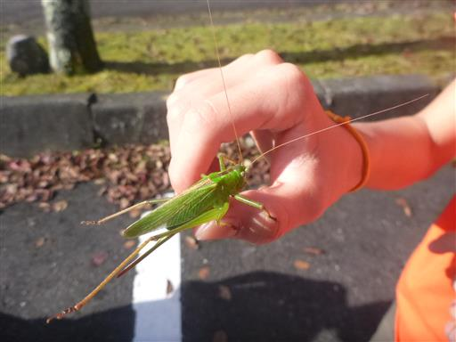
準備を整えて登山開始。広場の奥の目立たない場所から登山道は始まる。
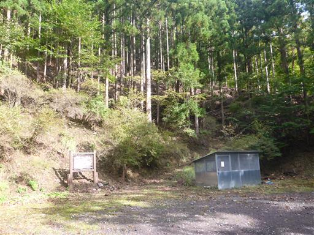
最初からぐんぐん高度をあげて行く。
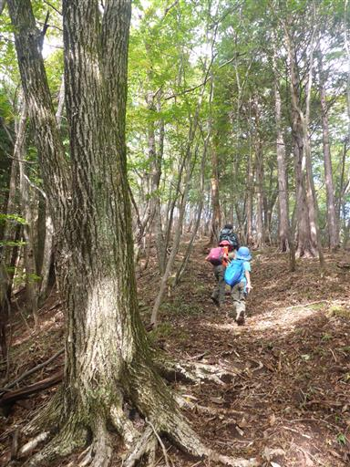
途中で赤城の山々を見渡せる。今は紅葉の季節。
所々にある赤色が目立っている。
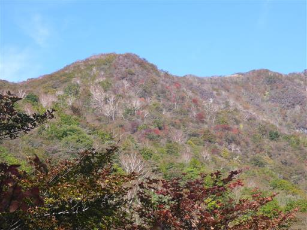
尾根道が続く。鳥居峠へは二本の登山道があるようだが、
手持ちの古い地図には沢沿いの一本の道しか載っていない。
こっちは尾根道コースのようだ。
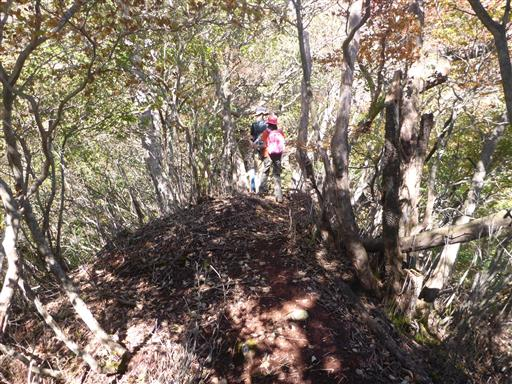
小さな岩場。ダラダラした登りよりこのような道の方が面白い。
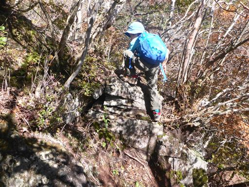
案外痩せ尾根だ。
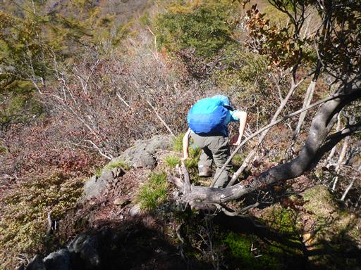
葉を落とした白い幹が目立っている。
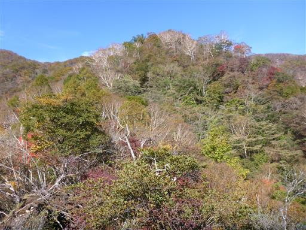
登山道の右側が大きく崩壊している。
思いの外、危険な道だが、息子は意に介さずどんどん登って行く。
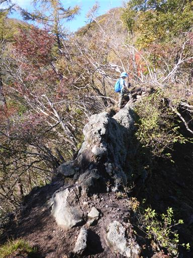
急斜面の登り。
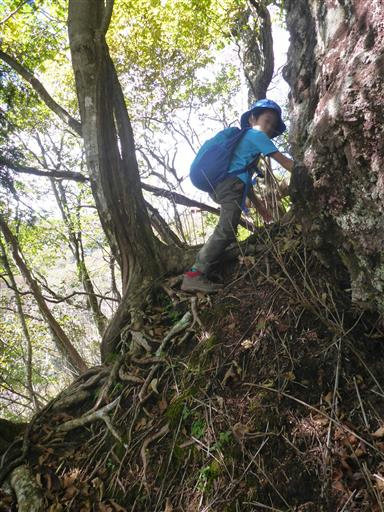
小さな岩場を越える。

振り返ると、赤城山の広大な裾野が見える。
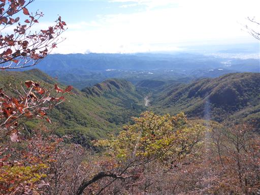
まだまだ急斜面は続く。
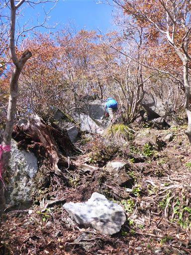
ようやく道が平坦になる。周囲の紅葉が美しい。
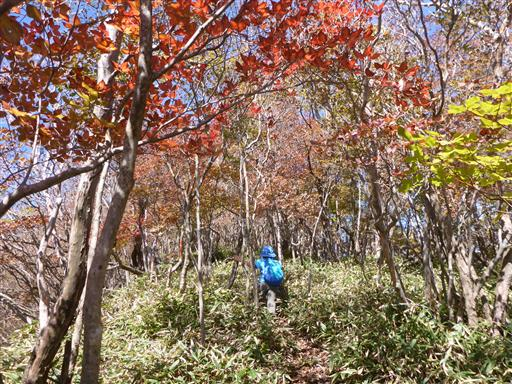
遠くの展望が広がる。見えているのは足尾山塊の皇海山と袈裟丸山だ。
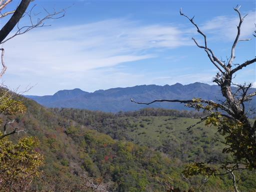
分岐点を過ぎると道は下りになる。
最初の目的地の鳥居峠より、すでに標高の高いところまで来てしまった。
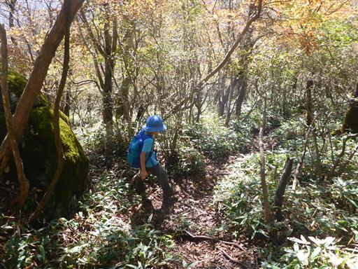
この辺りの風景は非常に美しい。
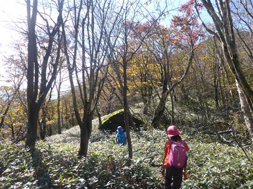
黄葉と笹原の中を歩いていく。

眼下に覚満淵が見えてくる。
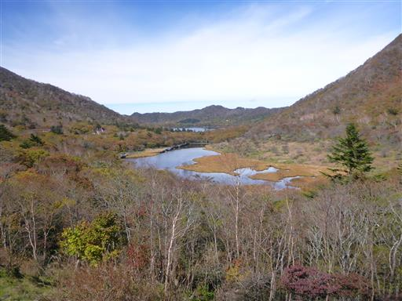
この後登山道を外してしまい、目の前に見える覚満淵に抜けようとしたが、
覚満淵を取り囲む防獣ネットに阻まれる。
仕方なく鳥居峠の駐車場まで斜面を這い上がる。
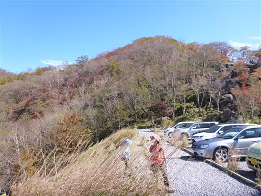
ここからしばらく車道を歩いて地蔵岳の登山口を目指す。
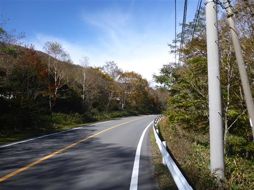
地蔵岳の登山口に到着。
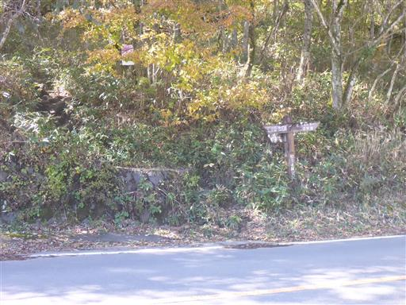
地蔵岳への登りは初っ端から急登だ。
気分的には本日2回目の登山なので体が重い。
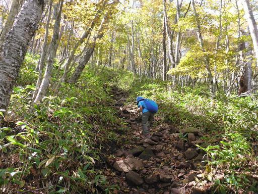
周囲はススキが多い。すっかり秋の景色だ。
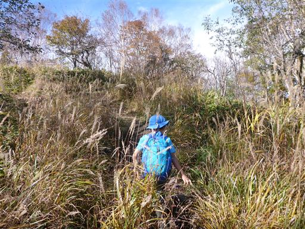
分岐点に到着。ここで地蔵岳の中間点、あと一息だ。
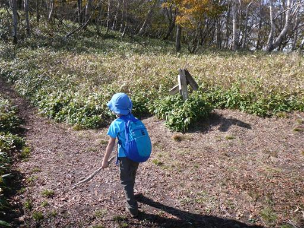
眼下には覚満淵とその奥に鳥居峠が見えている。
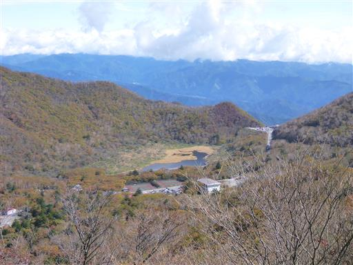
陽の光を反射して笹がきらきらと輝いている。
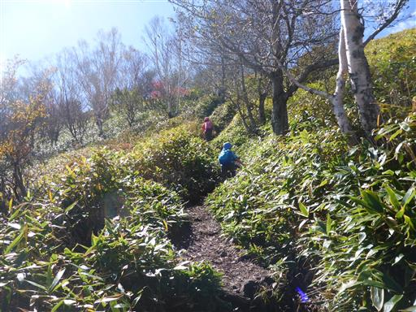
赤城山の最高峰、黒檜山が聳えている。一際高く存在感がある。
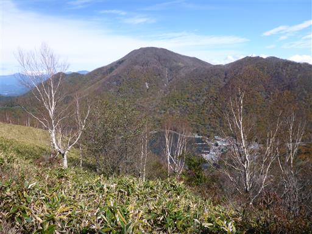
小ピークに到着。アンテナの建つ地蔵岳まであともう少しだ。

展望が広がる爽快な尾根道。
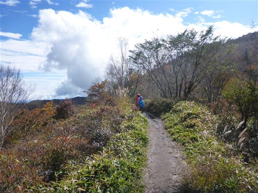
地蔵岳への最後の登りは岩だらけの道だ。
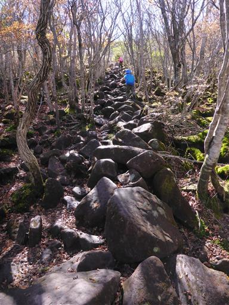
子供達は一足先に山頂へ行き、腰掛けて待っている。
今日は長めの道だったが、息子は最後まで文句を言わずに登り切った。
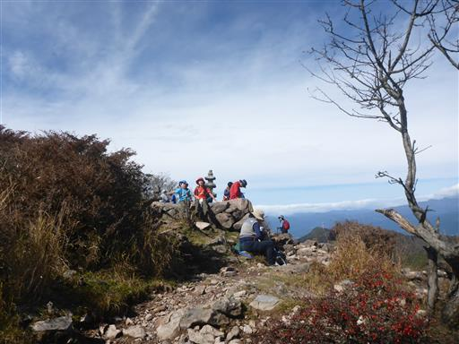
地蔵岳に到着。標高1674m。一等三角点のある山頂だ。
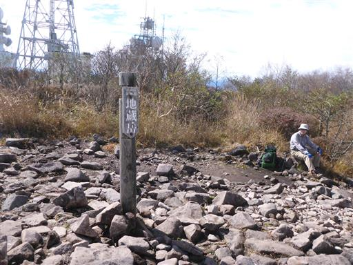
山頂には多くの通信アンテナが建っている。
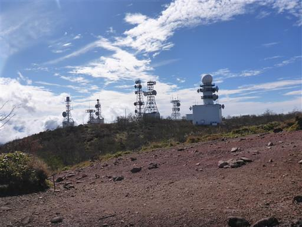
山頂からの景色。足元に大沼、遠くには上州武尊山、至仏山、燧ヶ岳が見えている。
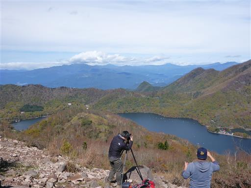
赤城神社も良く見えている。4年前に鯉の餌やりをした懐かしい場所だ。
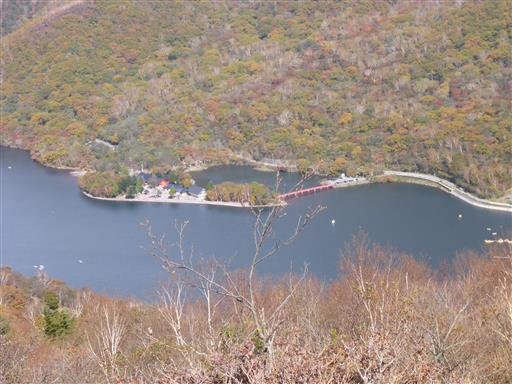
おしりの模様を発見。おしりたんていの本によく出てくるやつだ。
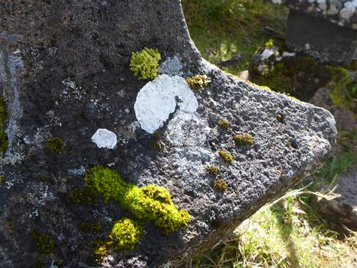
昼食をとったら下山開始。車道歩きは嫌なので、小沼経由で帰ることにする。
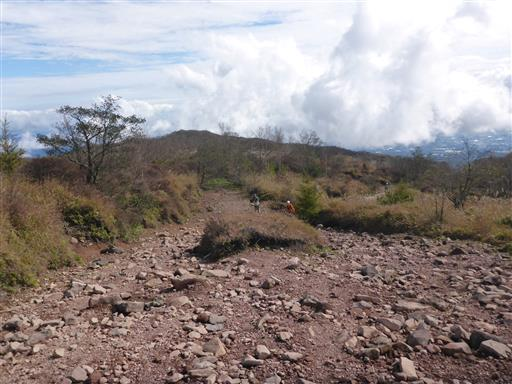
ここだけなぜか土が黒い。何の影響だろう？
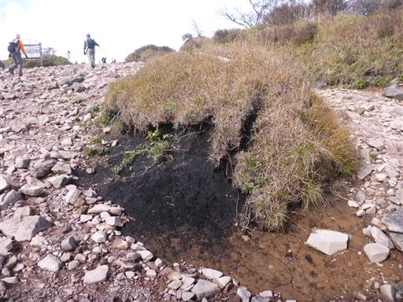
木道を歩く。道が整備されていて非常に歩きやすい。

左手には小沼が見える。
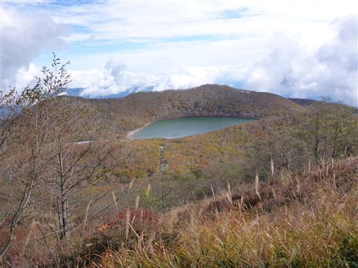
木の階段。それほど長くは続かない。
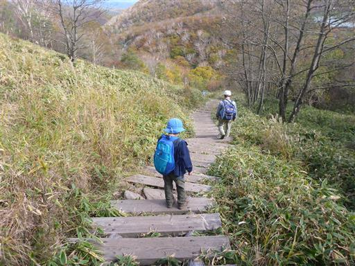
八丁峠に下りてくる。ここは車道が通っていて、車がたくさん停まっている。
ここから地蔵岳の往復であれば楽勝登山だ。
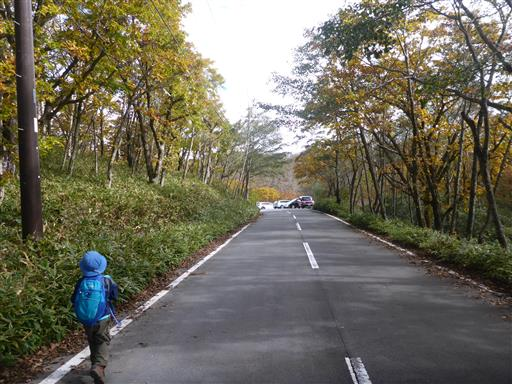
この辺りの紅葉も美しい。
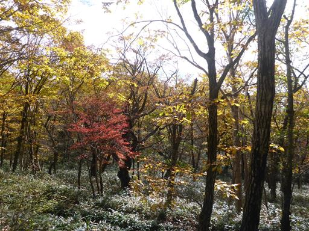
小沼の側を通り過ぎるが、あまりゆっくりしている時間は無いため、
湖畔までは下りずに通り過ぎる。
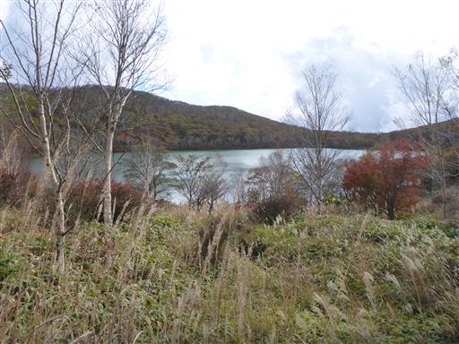
ここからは以前、長七郎山に登った時に歩いた勝手知ったる道だ。
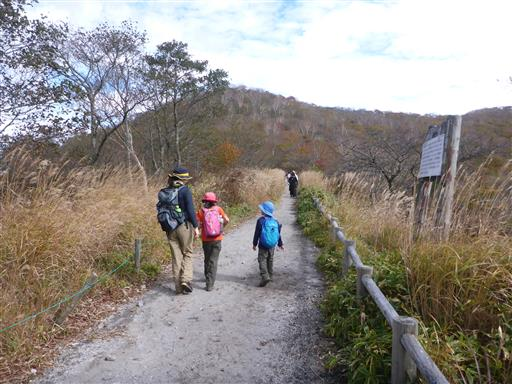
紅葉と大沼。きれいに色付いている。
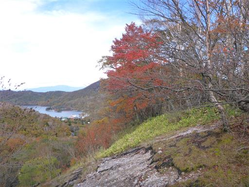
鳥居峠に到着。ここで休憩して、ちょっと寒いけどソフトりクリームを食べる。
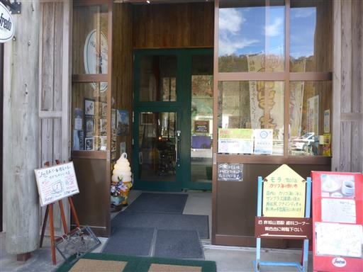
赤城登山鉄道（ケーブルカー）の廃線跡。鳥居峠からの下山はここを歩く。
なぜかロープが張られているのと、観光客にジロジロみられるので、少々歩きづらい道だ。
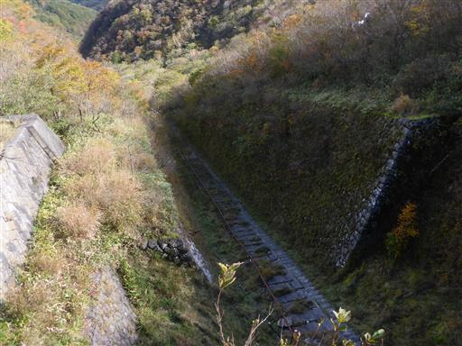
娘はこの道に入るのを嫌がっていたが、予定通りここを下山する。
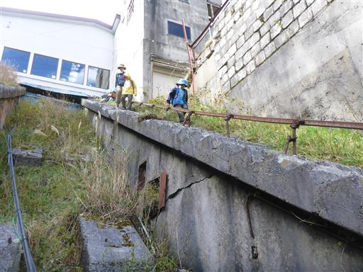
延々と続く階段。周囲に人影はない。
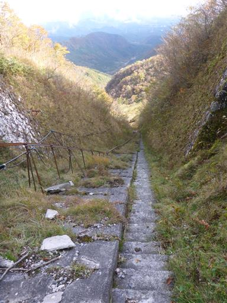
電柱が倒れている。一部荒れているが、歩行に支障はない。
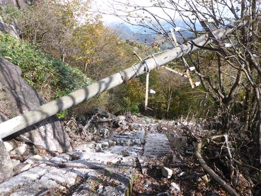
途中で登山道は廃線跡から横に逸れる。
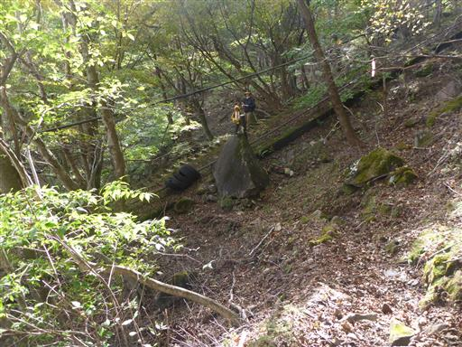
小さな沢を何度か横切る。少々崩壊気味でこの辺りも登山道は荒れている。
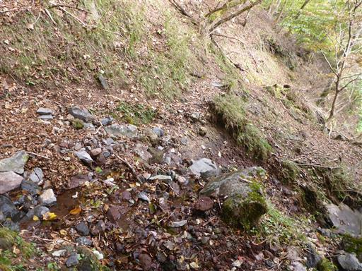
巨大な石が落ちている。こんな石が落ちてきたらひとたまりもない。
眼下には廃線跡と思われる枕木が残っている。
利平茶屋森林公園の一番奥地に下山する。ここから15分ほど歩くと駐車場だ。
久し振りにしっかりと山を歩くことができた。
山頂からの展望や紅葉が美しく、鳥居峠までの登山道のマニアックさも楽しい登山だった。